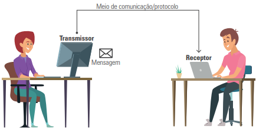
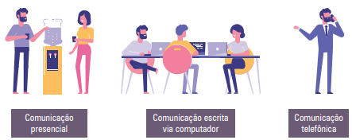
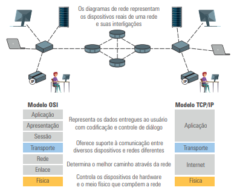
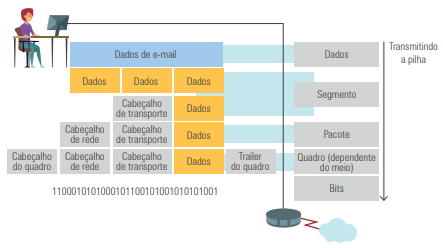

A comunicação de dados funciona de maneira semelhante à comunicação humana: requer um transmissor, um receptor, um meio de comunicação e um protocolo. O transmissor envia uma mensagem ao receptor, utilizando um meio (físico ou lógico) e respeitando um conjunto de regras (protocolo).
Para que a comunicação seja compreendida, é necessário um acordo sobre a linguagem utilizada.
A comunicação de dados é baseada nesses mesmos princípios, mas aplicada à troca de informações entre dispositivos. Pode ocorrer de várias formas:
O modelo OSI foi criado pela ISO para padronizar a comunicação entre dispositivos, dividindo-a em 7 camadas. Cada camada tem uma função específica e protocolos próprios, o que permite modularidade e interoperabilidade entre fabricantes.
| Camada | Descrição da funcionalidade |
|---|---|
| 7 – Aplicação | É a camada mais próxima do usuário e fornece serviços diretamente às aplicações. Nela estão os protocolos que permitem o acesso à internet, envio de e-mails, transferência de arquivos e outras funções, como HTTP, SMTP, FTP e DNS. |
| 6 – Apresentação | Responsável por formatar os dados para a camada de aplicação. Cuida da codificação, compressão e criptografia das informações, garantindo que dados de diferentes sistemas possam ser compreendidos. |
| 5 – Sessão | Gerencia a comunicação entre dois dispositivos, estabelecendo, mantendo e encerrando sessões. Também identifica fluxos de dados e os organiza para garantir que informações simultâneas não se misturem. |
| 4 – Transporte | Controla a confiabilidade da comunicação, segmentando e remontando dados. Estabelece conexões fim a fim entre os dispositivos, controla a ordem e a integridade da entrega por meio de protocolos como o TCP e UDP. |
| 3 – Rede | Gerencia o roteamento dos pacotes entre os dispositivos da origem ao destino. Define endereços lógicos (como os IPs) e escolhe os melhores caminhos para que os dados cheguem corretamente ao destinatário. |
| 2 – Enlace | Garante a entrega livre de erros entre dois dispositivos diretamente conectados. Divide os dados em quadros, detecta e corrige erros, controla o fluxo e regula o acesso ao meio físico de transmissão. |
| 1 – Física | Define os aspectos físicos da transmissão, como cabos, conectores, sinais elétricos e ópticos. Determina os padrões mecânicos e elétricos para enviar bits de forma confiável pelo meio físico. |
Antes do modelo TCP/IP, muitos protocolos eram proprietários, impedindo a comunicação entre dispositivos de diferentes fabricantes. O TCP/IP, desenvolvido pela DARPA, tornou-se padrão universal.
O protocolo TCP (Transmission Control Protocol) controla a conexão, a sequência e a retransmissão de pacotes. Já o IP (Internet Protocol), localizado abaixo do TCP, cuida do roteamento e da entrega dos pacotes.
No modelo TCP/IP, o encapsulamento ocorre quando uma mensagem passa por cada camada da pilha de protocolos, recebendo um cabeçalho que será lido por seu correspondente no destino. O processo segue até que a mensagem seja transmitida fisicamente em sinais elétricos ou ópticos.
Veja o seguinte vídeo para melhor entendimento: link
O capítulo abordou os fundamentos da comunicação de dados, a estrutura da transmissão, os modelos OSI e TCP/IP, e o processo de encapsulamento. Com isso, compreendemos como dispositivos trocam informações em rede de forma padronizada, organizada e eficiente.